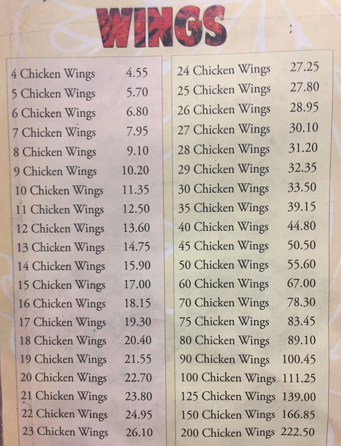
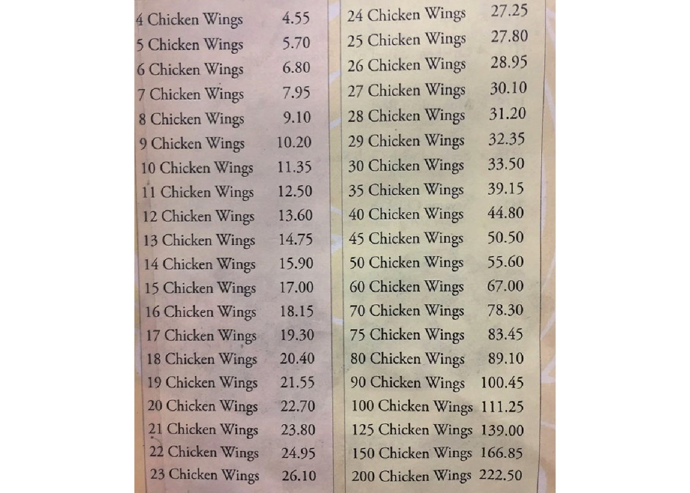
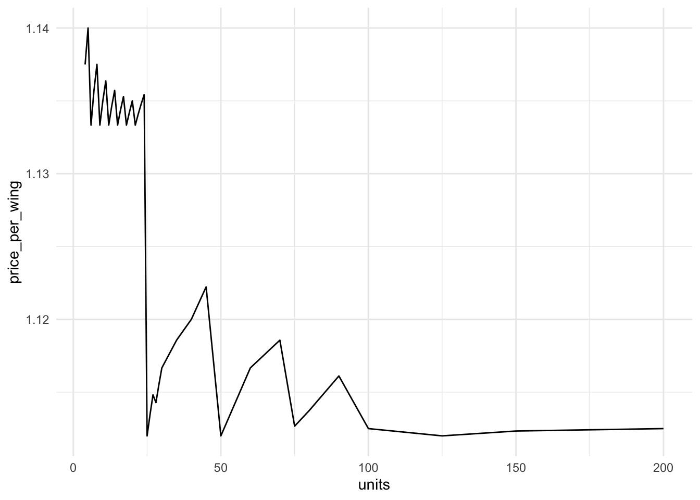

tesseract demo
Background
A bit of 2018 history: A weird obsession emerges surrounding Danny’s Wok chicken wings pricing.
Here’s the menu that created an uproar:
A few things to notice about this menu:
- It’s an image (JPG)
- Non-selectable text
- We want to do some analysis
Our question: How can we get this information into a format that we can more easily work with, without manually entering into a new spreadsheet?
OCR: Optical character recognition
Optical character recognition extracts text information from images.
The tesseract R package provides access to Google’s OCR engine. You can combine it with helpful image processing tools from magick.
Attach packages:
library(tidyverse)
library(magick)
library(tesseract)Get the image & take a look:
img <- image_read("chicken-wings.jpg")
image_ggplot(img)
Pre-cleaning & OCR
img %>%
image_crop(geometry_area(0, 0, 20, 120)) %>%
image_ggplot()
# Code below from Tom Mock's example! Thanks Tom!
num_only <- tesseract(
options = list(tessedit_char_whitelist = c(".0123456789 "))
)
prices <- img %>%
image_crop(geometry_area(0, 0, 20, 120)) %>%
ocr(engine = num_only)Clean it up
# Wranglin'
wings_df <- prices %>%
str_split(pattern = "\n") %>%
data.frame() %>%
rename("prices" = 1) %>%
mutate(prices = str_squish(prices)) %>%
separate(prices, into = c("units_1", "price_1", "units_2", "price_2"), sep = " ") %>%
drop_na() %>%
mutate_if(is.character, as.numeric)
# Separate into two data frames with matching names
one <- wings_df %>%
select(1,2) %>%
rename(units = units_1, price = price_1)
two <- wings_df %>%
select(3,4) %>%
rename(units = units_2, price = price_2)
# Recombine them
full_menu <- rbind(one, two) %>%
mutate(price_per_wing = price / units)Plot the oddness
ggplot(data = full_menu) +
geom_line(aes(x = units, y = price_per_wing)) +
theme_minimal()
More information / examples
- Tom Mock’s blog post
- Jeroen Ooms’ example with some pre-processing using
magick